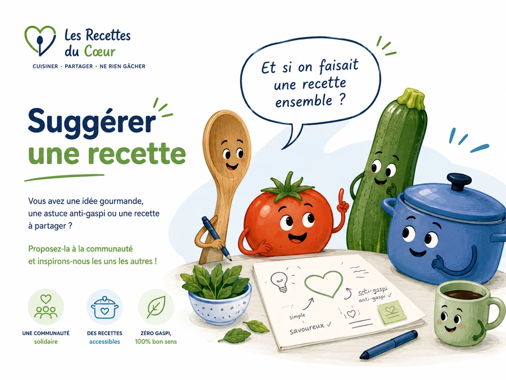

💡 Participation
Suggérer une recette
Vous avez une idée gourmande, une astuce anti-gaspi ou une variante simple à partager ? Elle peut aider d’autres personnes.
Ce projet est ouvert à toutes les bonnes volontés.
Que vous souhaitiez proposer une recette, corriger une fiche, partager une astuce, suggérer une variante ou simplement aider à améliorer le site, votre contribution est la bienvenue.
Que vous souhaitiez proposer une recette, corriger une fiche, partager une astuce, suggérer une variante ou simplement aider à améliorer le site, votre contribution est la bienvenue.
📧 Où envoyer votre idée ?
Envoyez votre suggestion à :
Vous pouvez indiquer, même simplement :
- le nom de la recette ;
- les ingrédients principaux ;
- les étapes de préparation ;
- les variantes possibles ;
- les allergènes connus ;
- une astuce anti-gaspi.

🤝 Une création collective
Chaque idée peut devenir une fiche claire, simple et utile. L’objectif est de construire une base de recettes accessible, solidaire et anti-gaspi.
Les propositions peuvent être retravaillées avant publication pour garder un format homogène : ingrédients, quantités, étapes, variantes, allergènes et PDF.
📱 Retrouvez le site facilement
Scannez ce QR code pour ouvrir directement Les Recettes du Cœur.
https://recettesducoeur.github.io/